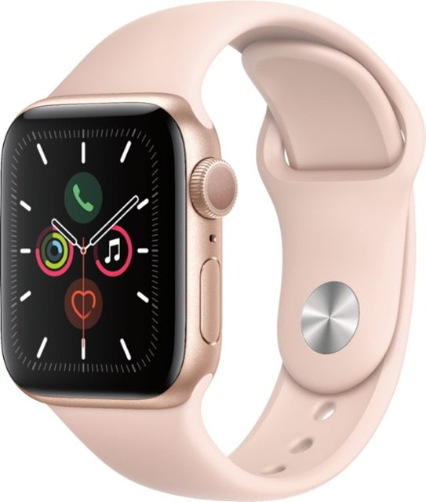
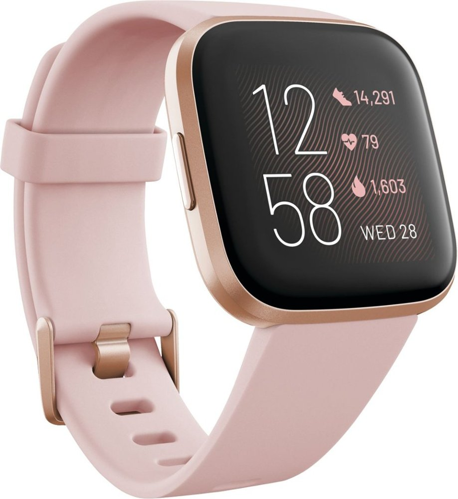

|  Apple Watch Series 5 |
 FitBit Versa 2 |
| Buy it for |
Buy it for $196.99 at Amazon.com |
| PRODUCT DESCRIPTION | |
|---|---|
| Apple Watch Series 5 has a display that's always on, showing the time and important information - no need to raise your wrist. Tracks your workouts and activity.
and makes it easy as the interface is similar to iPhone, which I am super comfortable with.
Price: $ Student Price: $ |
Fitbit Versa 2 is a great Fitness tracker. The built-in Amazon Alexa is a awesome feature. This allows to create alarms, set bedtime reminders using my voice.
Its design is modern and versatile. Price: $ Student Price: $ |
| PRODUCT FEATURES | |
|
|
PRODUCT REVIEWS
Apple Watch Reviews
Meghan K
Great Watch
Love all the health and workout items you can track as well as emails, phone calls and text messages. Great watch
Adrian D
Try it! you will like it
This is a great portable small computer with links on your wrist.
Ethan R
DO NOT BUY
The glass easily cracks if you drop it accidentally from waist height.
FitBit Versa Reviews
Emma T
Watch out for this one
Synching issues. My phone said it was connected, but I couldn't get notifications.
Maryanne S
Good Purchase
This Fitbit Versa 2 Smartwatch has helped me take more steps every day.
Patrick M
Affordable
If you are an apple fan this review is not for you, but if you want a good way to track your activity sleep and heart rate while having some fun extras on your wrist for an affordable price then Versa 2 is perfect.